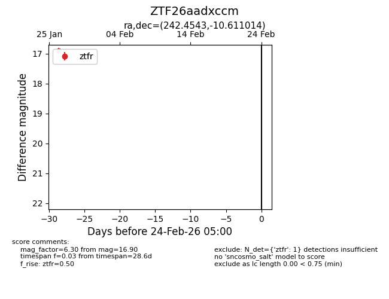
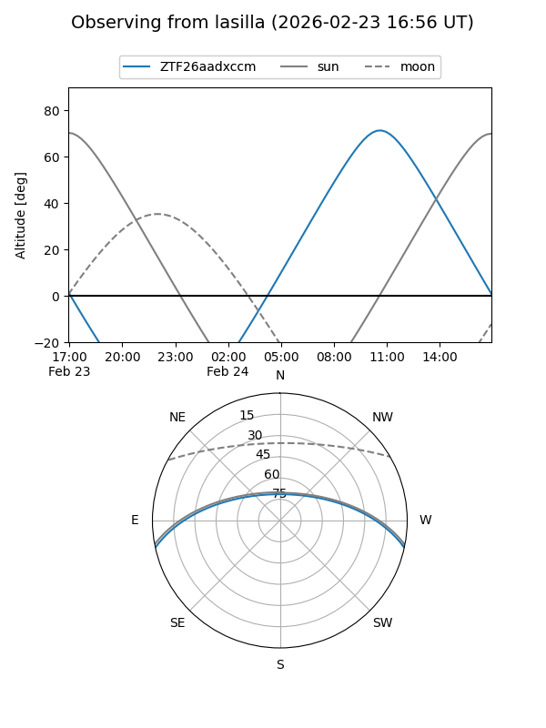
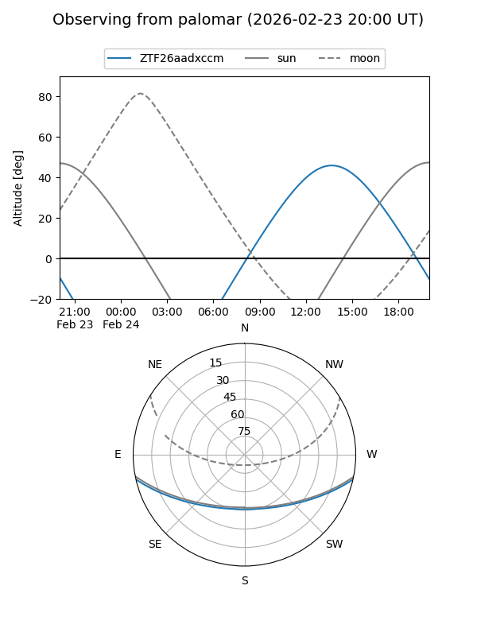

ZTF26aadxccm
Target ZTF26aadxccm at 2026-01-28 15:21
Aliases and brokers:
FINK: link
Lasair: link
ALeRCE: link
alt names
ZTF26aadxccm (ztf,fink_ztf)
Coordinates:
equatorial (ra, dec) = 242.4543,-10.61101
equatorial (HMS+DMS) = 16:09:49.04,-10:36:39.65
galactic (l, b) = (1.6699,+28.88479)
Flags:
Photometry:
last ztfr=16.90
1 ztfr detections
Lightcurve

Visibility


Additional plots